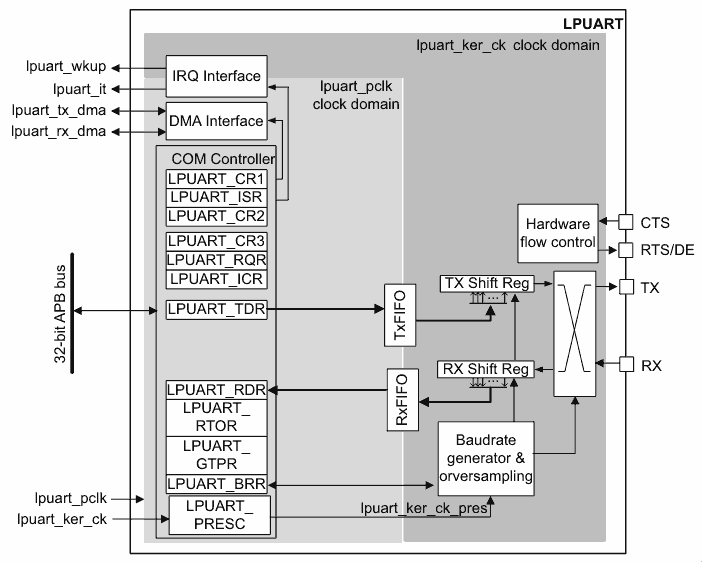

Contents
STM32G0 LPUART Bare-Metal (No HAL)
Bare-metal LPUART is something I began learning when I decided to build a recovery beacon for my university rocketry team.
I had 3 spare STM32G031K8 Nucleo boards and wanted to see how far I can push a small battery to allow the MCU to keep transmitting its GPS coordinates at regular intervals until we recover the rocket (for the mid-2027 launch, so if you're reading after that, hopefully the launch went well!)
Naturally, using UART's low-power alternative, LPUART, was the obvious move.
At its core, both the regular UART and the LPUART peripherals implement the same protocol to achieve the same thing, the difference is their execution. That's why if you've read the UART article (which was STM32H7RS-specific), you'll already know a lot of the information around how UART works and what the main parts of the block diagram are, so you might want to just skim them and hurry to the part about the differences.
What Is UART?
UART stands for Universal Asynchronous Receiver-Transmitter. It's a universal way of receiving and transmitting serial data, serial meaning it's sent one bit at a time instead of at once.
In short, 2 connected devices send and receive packets between each other through their own ‘transmit' and ‘receive' lines, and they do it at a pre-agreed speed.
The packet itself is structured so the receiver knows when it starts, how much data there is, a bit to check if the data is corrupted, and another 1 or 2 to know that the packet is finished.
2 devices are connected with 2 physical lines (device A's transmit connects to device B's receive, and device B's transmit connects to device A's receive). These lines are used to send/receive packets at a pre-agreed speed (called baud rate).
Packets are structured, generally like this:
- 1 bit indicates the start of a packet
- 7-9 bits (configurable) hold the data
- 1 bit (optional) indicates if the data is corrupted via bit parity
- 1 or 2 bits (configurable) signal the end of a packet
Parity
This is an optional bit that the receiver can use to detect if the data it received has been corrupted in transit (e.g. if the line is noisy or there's interference).
There are 2 options:
- odd parity
- even parity
In either case, the amount of 1's in the data are counted and the parity bit is set based off that:
- In odd parity, if the number of 1's is even, the parity bit is 1
- If the number of 1's is odd, the parity bit is 0
- Vice-versa for even parity
This isn't a perfect way of detecting errors - if 2 data bits are corrupted instead of 1, it will not be detected, but it's good enough for basic UART.
It's also not an error correction mechanism, it can only detect them.
Parity On STM32
On the STM32s, the parity bit is counted towards the total data bits. So if you've selected to have 9 data bits, and you enable the parity bit (done with the PCE bit in the LPUART_CR1 register), you will only have 8 bits for data; the 9th is reserved for the parity bit.
Stop & Start Bits
By default, the UART data lines (both the Tx and Rx line) idle at a logical high (AKA they idle at 1). This is why the start bit HAS to be the opposite of what the line idles at, else the start of a packet won't be reliably detectable. The stop bit is the same logical level as the idle line.
So for the default configuration, the start bit is 0 and the stop bit is 1.
Each of the Tx/Rx lines have a logical level inverter (LPUART_CR2 register, specifically the TXINV/RXINV bits) which inverts the polarity of the whole line, this making idle & start a 1, and stop a 0. All data is also inverted.
Oversampling On The G0
If you're interested in what oversampling is, look at the generic UART chapter - the LPUART doesn't support oversampling configurations so knowing what it is would only benefit your personal satisfaction.
For the actual oversampling value, I wasn't able to find information on what the value is, however, I was able to work out what it would be in theory.
The RM0444 reference manual (for the STM32G0x1 Nucleo boards) shows this formula:
/*
* - lpuart_ck_pres is the clock used by the baud rate generator
* - LPUARTDIV is the value you write into the LPUART_BRR register
*/
baud rate = (256 * lpuart_ck_pres) / LPUARTDIV
The reference manual states that LPUARTDIV has a minimum value of 0x300 (768 in decimal). This means that from the 32.768 KHz LSE clock, you can generate a maximum baud rate of 10,922.667. From that, you can divide the 32,768 clock speed by 10,922.667, you find that there are 3 clock cycles per baud period, which means each bit can be sampled up to 3 times.
However, given how the sampling works on the H7RS (again from the generic UART article), I imagine only the 2nd sample is actually counted as it falls right in the middle of the baud period.
This effectivelly means the LPUART doesn't oversample, it's the same as using ONEBIT mode on the USART controller.
Now, this is all speculation, as I said I haven't found exactly how oversampling works on the G0, so take it with a grain of salt.
LPUART On The STM32G0
The main benefit of using LPUART over the USART controller on the G0 family is that it is capable of running UART at a 9,600 baud rate with just the LSE 32.768 KHz clock, which makes it possible to function in low-power modes by using the LSE as its kernel clock.
LPUART Block Diagram

The hardware breaks down as follows:
- the
lpuart_pclkbus interface clock domain manages the register access for you to configure the LPUART - the
lpuart_ker_ckkernel clock domain manages the actual UART protocol logic and data transfer
On the left, you see all of the registers you use to configure and control the UART protocol, including things like interrupts and DMA. On the right, you see the actual execution of the protocol.
Character & Data Length
As I said in the explanation of what UART is, the LPUART controller lets you configure between sending 7, 8, and 9 bits of data per packet.
The control is done with the M1 and M0 bits in the LPUART_CR1 register, which means the lpuart_pclk bus interface clock must be turned on through the RCC_APBENR1/RCC_APBSMENR1 register for the LPUART instance you wish to control.
The stop bits are also configurable in the STOP bit field of the LPUART_CR2 register, letting you select between 1 and 2 stop bits.
The controller can also send 2 'special' characters:
- Break character: all bits from the start bit to the last stop bit are 0s, followed by 2 regular stop bits
- Idle character: all bits from the start bit to the last stop bit are 1s
What the receiver decides to do with these bits is user-defined.
Transmitting/Receiving Data
By default, the LPUART transceiver transmits/receives 1 data frame at a time, requiring you to service it every single time to avoid delays or overruns (when new data comes in before you read the old one, causing data loss).
It's done through 2 registers:
LPUART_TDRfor transferring dataLPUART_RDRfor receiving data
There are also flags (LPUART_ISR register) and interrupts associated with the flags which let you service the data on an interrupt basis instead of polling and blocking the CPU, but that's for the interrupt section.
LPUART FIFO Mode
If you want to only service data when you have a few bytes backed up instead of on every frame, the FIFO mode is one of the solutions.
By enabling it with FIFOEN in the LPUART_CR1 register, transceived data from the TDR/RDR registers is moved over to the FIFO, allowing the transmitter/receiver to service another data frame, then another, and another, until the FIFO is empty/full (empty for transmissions, full for receiving).
Once you set the FIFOEN bit, there's nothing else you need to do*:
- Writing to the TDR register pushes bytes to the TxFIFO and shift register automatically, so sending data is exactly the same
- Reading from the RDR register pulls bytes from the RxFIFO after the read, so receiving data is exactly the same
* Unless you want interrupts.
LPUART Interrupts
To avoid going over each individual interrupt, which will be in the table at the bottom of this section, here's what you need to know:
- Look for the
xxxIEbits in one of the control registers (CR1/CR2/CR3) - To enable the interrupt, set the bit
- To disable the interrupt, clear the bit
Once you set the bit (e.g. TXEIE), an interrupt will be generated when the corresponding flag is set in the LPUART_ISR register (for TXEIE that's the TXE flag - when the TDR register is empty). Note that if the interrupt is disabled, the flag is still set regardless, so your ISR needs to not only check for the set flag, but also its corresponding enable bit, something like this:
void LPUART_ISR(void)
{
if ((LPUART->ISR & LPUART_ISR_TXE) && (LPUART->CR1 & TXEIE))
{
// TXE flag generated interrupt
// ...
There is also a configurable threshold interrupt. You can set the interrupt to be generated when the TxFIFO drops below it, or the RxFIFO goes above it, that way you have time to service the data before hitting an overrun.
Transmitter Interrupts
| Flag | Meaning | How To Clear | How To Enable |
|---|---|---|---|
| TXE | Transmit data register empty | Write to TDR | TXEIE |
| TXFNF | Transmit FIFO not full | Fill TxFIFO | TXFNFIE |
| TXFE | Transmit FIFO empty | Write to TDR or write 1 to TXFRQ | TXFEIE |
| TXFT | Transmit FIFO threshold reached | Write to TDR | TXFTIE |
| CTSIF | Clear-To-Send interrupt | Write 1 to CTSCF | CTSIE |
| TC | Transmission complete | Write to TDR or write 1 in TCCF | TCIE |
Receiver Interrupts
| Flag | Meaning | How To Clear | How To Enable |
|---|---|---|---|
| RXNE | USART\_RDR not empty | Read RDR or write 1 to RXFRQ | RXNEIE |
| RXFNE | RxFIFO not empty | Read RDR until RxFIFO is empty or write 1 to RXFRQ | RXFNEIE |
| RXFF | RxFIFO full | Read RDR | RXFFIE |
| RXFT | RxFIFO threshold reached | Read RDR | RXFTIE |
| ORE | Overrun error detected | Write 1 in ORECF | RXNEIE/RXFNEIE |
| IDLE | Idle line detected | Write 1 to IDLECF | IDLEIE |
| PE | Parity error detected | Write 1 to PECF | PEIE |
'Other' Interrupts
| Flag | Meaning | How To Clear | How To Enable |
|---|---|---|---|
| NE | Noise error | Write 1 in NECF | EIE |
| ORE | Overrun error\* | Write 1 in ORECF | EIE |
| FE | Framing error | Write 1 in FECF | EIE |
| CMF | Character match\*\* | Write 1 in CMCF | CMIE |
| WUF | Wake-up from low-power modes | Write 1 to WUC | WUFIE |
* The OVRDIS bit in the USART_CR3 register has to be set to 0 for this flag to work as explained.
** A character match is the same as an address match, the UART block looks for incoming characters that match what's inside the ADD bits in the USART_CR2 register, triggering an interrupt when detected.